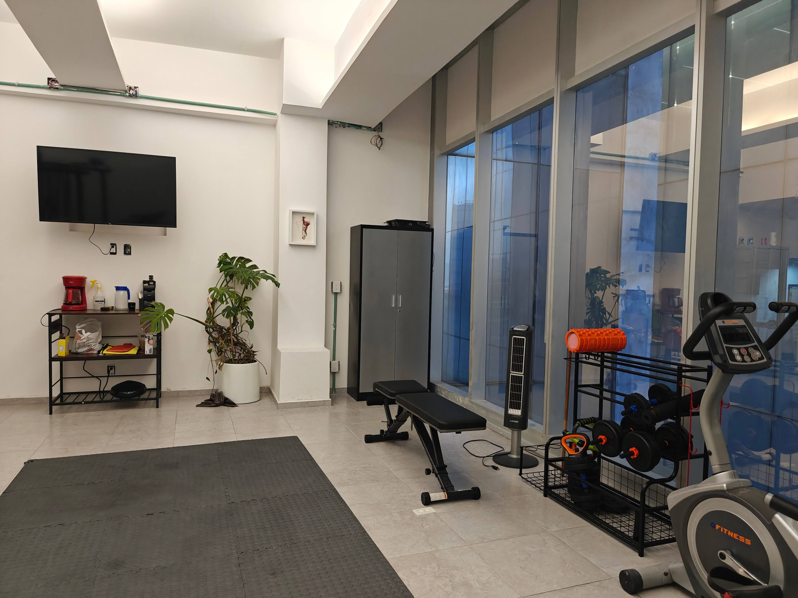
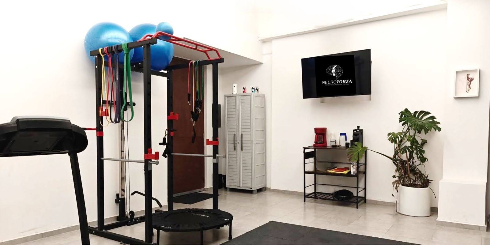
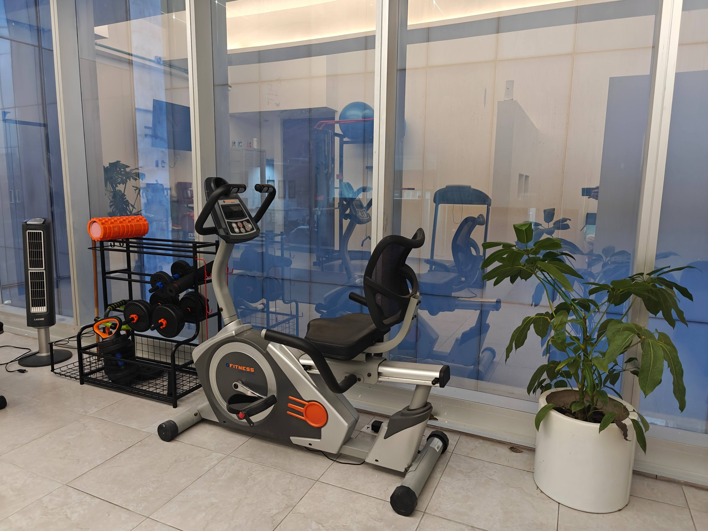

No es un gimnasio. No es un consultorio genérico. Es un espacio donde cada herramienta tiene un propósito clínico y cada sesión es solo para ti.

Rack funcional con sistema de resistencias variables, balones de estabilidad y trampolín terapéutico. Aquí se ejecuta ReForza: cada carga, cada repetición, calibrada a tu capacidad real y a la fase de tu plan.

Ventanales de piso a techo, banco de ejercicio ajustable, mancuernas progresivas y bicicleta estática recumbente. Un espacio abierto donde se combina la evaluación con el entrenamiento terapéutico — sin filas, sin interrupciones, sin distracciones.

Bicicleta recumbente con respaldo ergonómico — diseñada para pacientes que necesitan activación cardiovascular sin carga articular. Ideal para fases iniciales de rehabilitación, pacientes con fragilidad o condiciones que limitan la bipedestación prolongada.